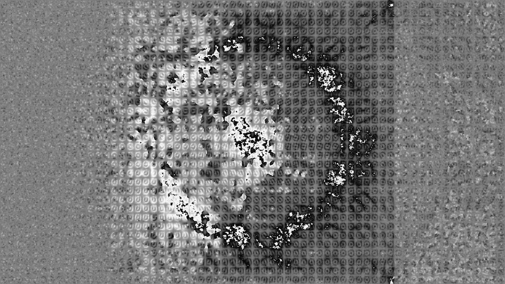
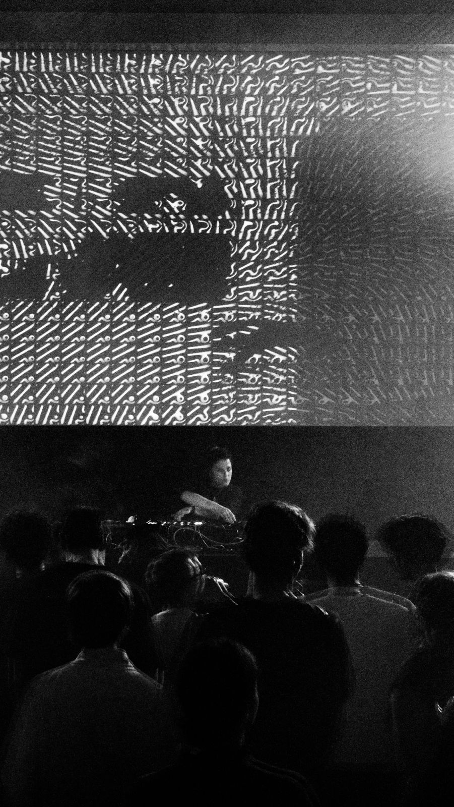

Simulated textures resulting from
different types of parameter modulation.
Independent project
2025-2026, Amsterdam
Simulated textures resulting from
different types of parameter modulation.
Named after the common mispronounciation of Ernst Ising, one of the inventors of the Lenz-Ising model of ferromagnetism, Eyesing is an exploratory tool for visualising phase transitions in virtual substances. The ubiquitous scientific model finds common use in molecular physics, biology and sociology, where relevant parameters (physical temperature, cell membrane fluctuations, social dynamics) perturb the state of a system beyond critical points.

Image processed by
an Eyesing simulation.
Programmed in Processing and enabling parameter modulation through video, audio and MIDI input, Eyesing can perform stochastic image processing by interpreting colour values as probabilities. A pattern scanning agent adaptively traverses a parameter space overlaid by the black-and-white image, balancing the simulation parameters about the edge of criticality. Through a perpetual cycle of randomness and self-organisation, the image constantly evolves, exploring the boundaries of pattern perception.

Snapshot from MIDI-controlled visuals
created for the event Surveillance Technologies @OT301, Amsterdam.
The algorithm’s first public display is in the form of an audio-responsive visual for the music event Surveillance Technologies at OT301 (Amsterdam) organised by organised by in 2026.

Visuals supporting the DJ act of Youknow
at Surveillance Technologies @OT301, Amsterdam.
Check out a demo here (Vimeo).
More info here.